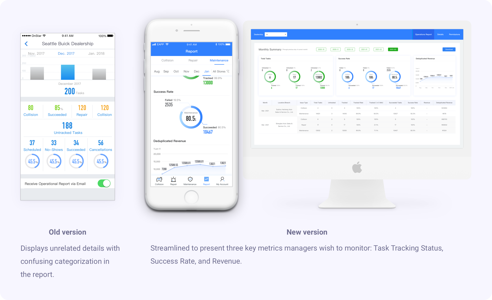
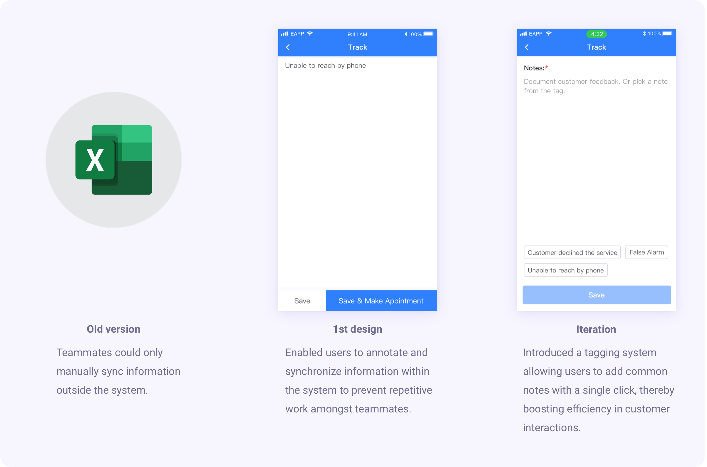
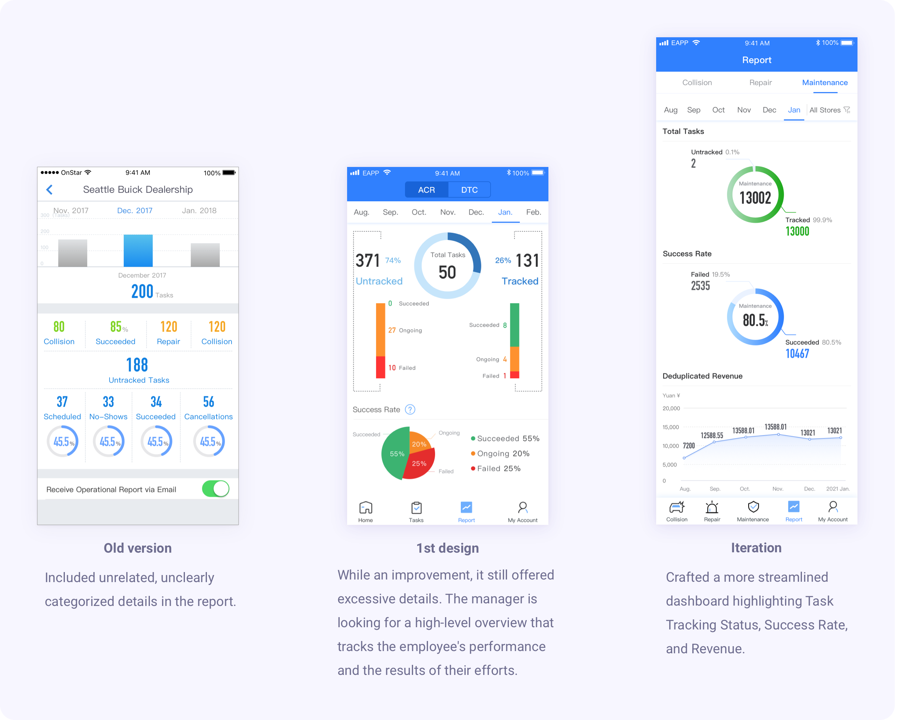
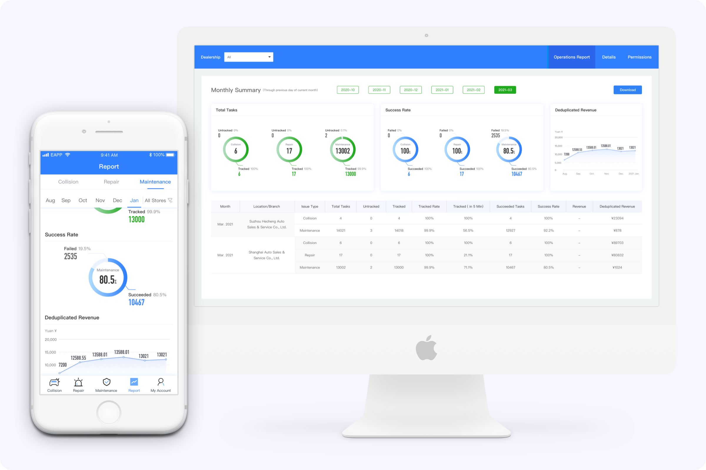

General Motors
car dealer's tool redesign
Background: General Motors operates a comprehensive database to monitor the status of cars owned by their customers. Various sensors installed in the cars provide real-time data on vehicle conditions, covering damage issues caused by fender benders or more serve collisions and maintenance needs like oil levels. Car dealerships utilize this database to offer car owners timely maintenance and repair services, reflecting General Motors' commitment to exceptional customer care.
Project Overview: EAPP, a B2B2C service tool, was developed to facilitate service advisors in accessing vehicle condition data and delivering services to car owners. I undertook the responsibility of redesigning this outdated tool to provide car dealers with an efficient means of accessing the information necessary to deliver high-quality customer service.
(Note: All confidential information within this case study has been obscured to ensure compliance with the non-disclosure agreement. The opinions expressed here are solely my own and do not represent the views of General Motors.)
Design team
Product designer (me)
Product manager
Business analyst
IT project manager
My responsibility
Conducted UX research
Planned sprints with the team
Designed UX prototypes
Developed a design system
Duration
1 year
5 sprints
Company
problem & solution
Business goal
The objective was to enhance the car dealer's application, EAPP, to make it more appealing to a broader range of car dealer brands (subsidiaries) within the General Motors family, including Cadillac, Buick, and Chevy.
Design problems (high level)
- The tool's existing functions and categorization must be adjusted to align with the current user workflow.
- The presentation of information within the tool was difficult to read, thus affecting staff efficiency.
- Existing processes required staff to synchronize information manually, creating operational inefficiencies.
- The application lacked a design system, making the development and iteration processes less streamlined.
Solution
Solution 1: information structure
I reworked the information structure to better align with the user's workflow.
Solution 2 & 3 in the interface (partial)
2. Implemented a streamlined information presentation using a folding card design, enhancing readability and user experience. (See video below)
3. Introduced a history records functionality that automates information synchronization within the system, thereby eliminating the need for manual syncing. (See image below)
Solution 4: Design system (partial)
I established and maintained a design system for the new product. This document benefits engineers during the coding process and is a valuable guide for new designers joining the project.
Design guides (partial)
The guide consists of eight chapters that address key aspects such as color, typography, icons, task cards statuses, and more.
Component library

impact
Boost revenue
The product's user base increased from 20 to 3000 car dealer stores. This product was sold to approximately 3000 subsidiaries, including Cadillac and Buick car dealers, accounting for half of the revenue in my department.
Augmented dealership's body work revenue
This app fundamentally serves to drive customers to dealerships for vehicle repairs, effectively securing an uptick in customer patronage and elevating the revenue generated from repairs and maintenance.
Improve customer satisfaction at dealerships
The efficiency of service advisors in providing after-sales customer care was enhanced, which improved customer satisfaction and the store reputation of Buick and Cadillac car dealers.
ux research
Identifying dealerships' task allocation and challenges
Methodology: I conducted a contextual inquiry with 15 staff members from 5 dealership stores. The participants included both managers and service advisors.
Finding 1: Function planning was outdated
Many functions were redundant, and the only useful function was not well-designed to meet user requirements.
I expected that my employees could utilize EAPP to generate more car repair and service fees. However, I do not realize any profit from EAPP! It has so many useless functions, and the only function I care about is difficult to use.
– Dealership manager No.2
The function categorization did not match users' work allocation.
I have to sift through 3000 maintenance service entries manually every week. It is a waste of my time.
– Car repair service advisor No.3
Finding 2: Information is not easy to read
Inconvenient: Switching between two pages to complete one task.
I have to switch back and forth between the information list and detailed information. I handle over 3000 pieces of information and make more than 3000 calls a week. This setting slows me down and sometimes causes me to lose track of my tasks.
– Maintenance service advisor No.3
The information hierarchy did not align with users' needs.
I have to search for useful information in the task. Typically, I only need the customer's name, phone number, car model, plate number, and car condition issues. I only require other details if customers request confirmation.
– Maintenance service advisor No.1
The operational report provides excessive, unrelated details that don't align with managers' current requirements.
I want to oversee if my employees have completed all their tasks. Additionally, I'd like insights into the number of successful tasks and how these contribute to our revenue.
– Dealership manager No.1
Finding 3: Information synchronization is not well designed.
Staff manually shared information with colleagues, alternating between mobile, desktop, and paper, resulting in low efficiency.
Together with my coworkers, we make calls to over 6000 customers every week. In the system, we don't know who has been called and who hasn't. We have to allocate our customers using Excel tables, which is tedious. We also get confused when new tasks arrive after work allocation.
– Maintenance service advisor No.2
There was no information syncing with different departments, leading to repeated questioning of car owners, loss of trust, and customer frustration.
Sometimes OnStar has already communicated with the customer. Customers get annoyed with repetitive questions.
– Maintenance service advisor No.5
Personas & user journey
Direct user personas: dealership service advisors & dealership manager
Indirect user persona: car owners
User journey
key design direction
Replan product features
Redesign the information structure of the entire application. Remove redundant functions and concentrate design efforts on the currently needed function.
Improve information readability
- Redesign the information reading flow to enhance staff efficiency.
- Redesign the alert threshold to notify only when appropriate.
Improve information sync among workers and departments
- Implement a new, convenient information sync system within the application for service advisors.
- Expand the product ecosystem to allow for more information sync with the car owner's account and other customer care teams.
ideation & design choices
Features and categorization re-planning
To meet evolving user needs, I re-designed the information structure of the application.
- Old information structure: The old structure had multiple functions that were no longer in use.
- Sprint 2: I focused on decluttering the application by retaining only the useful function.
- Sprint 5: As larger dealer organizations began using our product, and with their more detailed working allocations for customer care, I further iterated on the information categorization to fit a broader user base.
Information architecture design choice
Homepage brainstorming
Homepage design choice (High Fidelity)
Making information easier to read
Information card design
I created a foldable information card design for users. When calling customers, they can quickly glance at essential information and unfold the card for additional information. This design improves the service advisors' working efficiency.
Information design brainstorming
Information design choice
Operational report redesign
I refined the report to focus on three vital metrics that are crucial for managers to monitor: Task Tracking Status, Success Rate, and Revenue.
Improving information synchronization with co-workers
I added a feature that allows users to update task status within the application, enabling effective intra-team communication.
Task flowchart & task status variations
Color codes for task statuses
Flow for sharing notes among teammates (partial)
Improving information synchronization with other departments
OnStar confirms user information and car conditions based on their service. I integrated this information to avoid repetitive questioning by different departments, thus improving customer experience.
design validation & iterations
Verify the feasibility with stakeholders
To ensure the feasibility of the designs, I planned the contents of the design for different sprints in collaboration with the Product Manager and Business Analyst. The aim was to launch feasible designs as early as possible to allow for necessary usability improvements.
Verify the desirability with direct users
Methodology: Conducted contextual inquiries and usability tests with 15 staff members across 5 dealerships after sprint 2 and sprint 4.
Finding 1: The new information card design and categorization received positive feedback.
I saved about one hour daily on calling those customers.
– Maintenance service advisor No.1
I can now focus on helping customers deal with their collisions. I don’t have to sift out my task from the long list.
– Repair service advisor No.9
Finding 2: Departmental information synchronization helped users gain more trust from car owners and increased the customer drop-in rate.
With the confirmed information from OnStar and the customer account. Fewer customers show their concern about the scam when I call them. The customer drop-in rate has risen. I’m glad my effort is not a waste.
– Maintenance service advisor No.3
Finding 3: The task history tracking system has been positively received by users. However, users repetitively jot down similar notes for most tasks, indicating a potential area to enhance efficiency.
Usability result: I observed that service advisors often recorded similar notes when contacting customers to encourage them to visit the stores.
Iteration
Finding 4: As larger dealer stores joined, the need for new categorization to accommodate more specific working allocations became evident.
Many more prominent car dealers allocate their service advisors more specifically. They don't only categorize it as maintenance and repair. They separate repair into collision and minor malfunction because car owners usually need more emergent assistance from specially trained service advisors when there is a collision. Therefore, a new categorization is required in this working mode.
Iteration

Finding 5: The operational report's content requires a more high-level approach to cater to the dealership manager's needs.
I don't need a rundown on ongoing tasks - that's my team's responsibility. I need a snapshot of their performance and the outcomes of their efforts. Essentially, I want to know the completion status of tasks, the number of successful tasks, and, if possible, the revenue generated from these tasks.
– Dealership manager No.2
Iteration
final delivery (partial)
Enhanced information readability
Folding cards: The innovative folding card design eradicates the need for secondary pages, offering a sleek display of critical information that facilitates a quicker and more streamlined workflow. (See video below)
Status color codes: This feature visually represents task statuses within the app, promoting real-time updates and preventing redundant efforts on identical tasks. (See image below)
Improved operational report: I refined the report to focus on three vital metrics that are crucial for managers to monitor: Task Tracking Status, Success Rate, and Revenue.
Upgraded information synchronization
Task track history sharing: I implemented a feature where users can seamlessly update task statuses within the app, fostering efficient communication within teams. (See video below)
Inter-departmental information sync: I integrated information verification through OnStar, which assesses user data and vehicle conditions based on their service, eliminating repeated queries across various departments and enhancing the customer experience. (See image below)
reflection
Adapting design to evolving user needs
As the product gained popularity, it required numerous changes in its iterations to cater to a larger user group. These changes demanded significant effort and resources from both the engineering team and myself. Reflecting on this experience, I learned several important lessons:
- Understanding the Long-term Product Plan: I realized the importance of grasping the long-term product plan to improve efficiency and streamline product iteration. Before initiating any design work, it's crucial to collaborate closely with product managers to understand the current and future plans for the product. This should include researching both the needs of current users and the requirements of future target users.
- Gradual Approach to Design Changes: A step-by-step approach to design changes can help in cost-saving. Making incremental changes based on user feedback and needs allows for more manageable and cost-effective iterations.
Importance of product ecosystem
By interacting with other departments and subsidiaries within the group company, I discovered the vital need for information synchronization across different departments. This collaboration is key to improving efficiency and having a more significant impact. Cross-team collaboration allows for a more comprehensive view of the product ecosystem and can lead to more informed and effective design decisions.